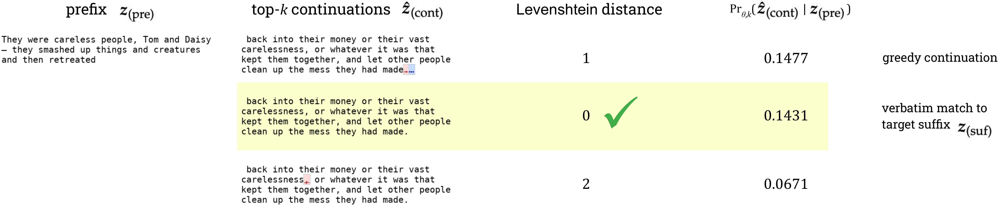
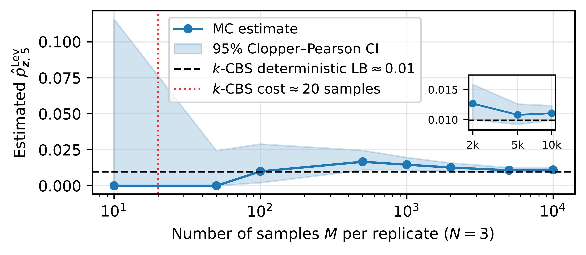
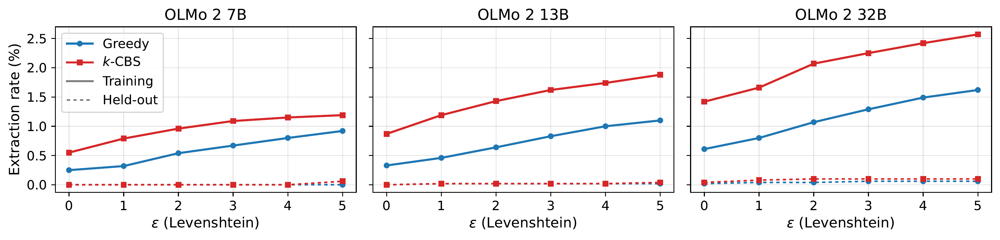

Language models memorize some, but not all, of their training data.
Intuitively, a piece of training data is memorized if the model assigns that specific text very high probability; this means that piece of training data is encoded in the model's weights in some form (Cooper and Grimmelmann, 2024; Carlini, 2025; Cooper et al., 2025).
Arguably the most popular way to quantify memorization in LLMs is extraction: prompting the model so that it reproduces memorized training data in its outputs (Carlini et al., 2021).
Studying memorization can tell us about model quality, since it may indicate overfitting rather than generalization. Memorization and extraction also have extensive implications for privacy and copyright.
Different ways of measuring extraction
The most common method is verbatim discoverable extraction (Lee et al., 2022; Carlini et al., 2023). For an open-weight base model, you take a piece of its training data, split it into a prefix and a target suffix, prompt the model with the prefix, generate a continuation with greedy decoding, and check whether that continuation exactly matches the target suffix. In practice, both are usually 50 tokens; the prefix prompt could be longer or shorter, but 50 tokens is the minimum length for outputs that the field tends to accept as valid evidence for extraction.
Greedy decoding picks the single most likely (top-1) next token at every generation step, which makes it a cheap proxy for finding a high-probability continuation. It's also deterministic: for the same model, prefix, and continuation length, you get the same continuation every time.
This setup naturally extends to near-verbatim extraction (Ippolito et al., 2023). Instead of requiring an exact match between the greedy continuation and the target suffix, you take that same continuation, measure its distance to the target suffix with a chosen distance metric (in either token or character space), and count it as extracted if it's within a small distance. Figure 1 shows an example, for Llama 1 13B and a training sequence from The Great Gatsby. The greedy continuation (top row) matches the target suffix except at the very end, where it has an ellipsis instead of a period.1 This is just one punctuation difference from the verbatim target, so verbatim discoverable extraction wouldn't count it as extracted, but near-verbatim extraction would.

Figure 1. For Llama 1 13B and a training sequence from The Great Gatsby, we show the prefix and 3 of its continuations under top-k decoding (k = 40), each with its Levenshtein distance to the target suffix and its probability given the prefix. The diffs mark characters added (blue) and deleted (red) relative to the target suffix. The verbatim match (highlighted) isn't the greedy continuation (top row), and all three continuations are near-verbatim matches to the target suffix.
Recent work introduces a probabilistic relaxation of verbatim discoverable extraction (Hayes et al., 2025). Since memorization means a sequence has unusually high probability under the model, why not measure that probability directly?
Concretely, we can easily compute the probability of generating the exact target suffix given the prefix under a chosen decoding scheme, and then count the sequence as extracted if that probability is at least some threshold, τmin.2 In Figure 1, the verbatim target suffix (highlighted) has probability 0.1431 under top-k decoding (k = 40), which ranks slightly below the probability of the greedy continuation.
This approach reveals significantly more memorization than its greedy, deterministic counterpart (Hayes et al., 2025; Cooper et al., 2025). It also conveys relative extraction risk across sequences, which greedy decoding can't. Two sequences might both count as extracted, but if one has probability 0.5 and the other 0.002, the first is far more likely to be generated: you'd expect to see it in about 2 samples, versus about 500 samples for the second. In contrast, greedy extraction would treat these two sequences the same way: it collapses extraction into the same binary, yes-or-no answer.
It's also significantly cheaper to compute at scale than greedy generation, in terms of wall-clock time. Instead of generating the continuation one token at a time, we can use teacher-forced inference: run a single forward pass over the entire 100-token sequence (the prefix and the target suffix), which gives the model's logits at every position at once. We can then cheaply post-process those logits to get the probability of each suffix token given everything before it, under whichever decoding policy we choose (for top-k, keep the k largest logits and renormalize). Multiplying those per-token probabilities gives the exact probability of the whole suffix.3
Teacher forcing is what makes probabilistic extraction efficient, but it doesn't naturally extend to the near-verbatim case. That's because it requires feeding the model a specific sequence: the full verbatim prefix and suffix. But for near-verbatim, there are many possible suffixes that could count as successful extraction. For instance, in Figure 1, all three continuations are near-verbatim matches, and there are many others. That makes the near-verbatim probability much trickier to compute.
And that's what this post is about. We've just walked through two overarching axes for measuring extraction: whether to use a deterministic (greedy) or probabilistic decoding scheme, and whether to require a verbatim match or accept a near-verbatim one.
Greedy
Probabilistic
Verbatim
Is the greedy continuation exactly the target suffix?
In our new paper (Cooper et al., 2026a), we introduce an algorithm for the missing piece: efficiently estimating near-verbatim probabilistic extraction. The other three cells each give an exact answer: a greedy check is a definite yes or no, and teacher forcing gives the exact verbatim probability. In contrast, our near-verbatim probabilistic method returns a deterministic lower bound, for about the cost of 20 samples. Settling for a lower bound is what keeps our approach tractable, because, as we'll see next, computing the near-verbatim probability exactly is far too expensive.
The obvious ways to compute near-verbatim probabilities are expensive
To compute a near-verbatim extraction probability, we first need to pin down which continuations count as "near-verbatim." Given a target suffix, a distance function, and a small maximum distance ε, the near-verbatim ball around the target suffix is the set of every continuation within ε of it. The near-verbatim probability is the total probability of everything in the near-verbatim ball: the sum of the probabilities of all of those continuations. As with verbatim probabilistic extraction, a sequence counts as extracted if this probability is at least τmin.
To make this concrete, we use an illustrative example, which we also use in the walk-throughs below: a prefix from The Great Gatsby (which is in the training data) and its 8-word target suffix.
prefixsmashed up things and creatures and then retreated
target suffixback into their money or their vast carelessness
Here, for simplicity, one word is one token, and the numbers are illustrative; they aren't from a real model.
Which continuations land in the near-verbatim ball depends on the distance function. Hamming distance compares two equal-length sequences position by position, and counts the positions where they differ. Levenshtein distance counts the fewest edits (substitutions, insertions, or deletions) needed to change one sequence into the other. Levenshtein is more forgiving of shifts: a continuation that skips the first word of the target suffix but otherwise matches is off by one at every position, so its Hamming distance is large, but its Levenshtein distance is just 2: insert the missing word at the start, and delete the extra word at the end (Figure 2).
2 edits to the continuation recover the target suffix: insert back, delete and
Figure 2. A continuation that skips the first word of the target suffix. Compared position by position, every word differs, a Hamming distance of 8; lined up, it's only 2 edits away, a Levenshtein distance of 2.
For this example target suffix, the Levenshtein ball with ε = 2 contains every 8-word continuation within 2 edits of it. Figure 3 visualizes the Levenshtein ball, showing a few of the continuations that are 1 or 2 edits away, along with their probabilities given the prefix. (Remember that these numbers are illustrative; this example doesn't use a real model.) Some are plausible, like back to their money or their vast carelessness (probability 0.081); others, like back github their money or their vast carelessness, have probability 0. The exact near-verbatim probability is the sum of the probabilities of all the sequences in the whole near-verbatim ball.
within 2 edits
back into their money, or their vast carelessness0.033
back intoto their money or their vast carelessnessindifference0.0069
back intoto their money or their vast carelessnessselfishness0.0049
back intoto their money or their vast carelessnessfortune0.0020
back into their money or theirthe vast carelessnessindifference0.0001
within 1 edit
back intoto their money or their vast carelessness0.081
back into their money or their vast carelessnessindifference0.0071
back into their moneywealth or their vast carelessness0.0067
back into their money or their vast carelessnessselfishness0.0047
back into their money orand their vast carelessness0.0044
back into theirthe money or their vast carelessness0.0005
back into their money or theirthe vast carelessness0.0004
back intogithub their money or their vast carelessness0
back into their moneypizza or their vast carelessness0
target suffix (0 edits)
back into their money or their vast carelessness0.101
probability under top-k decoding, 0.0001 to 0.1 (log scale)0impossible: uses a word outside the top kworddeletedwordinserted
Figure 3. A few of the continuations in the near-verbatim ball (Levenshtein, ε = 2), each shaded by its probability given the prefix under top-k decoding (k = 5); lighter is less likely. Most of the near-verbatim ball isn't shown: nearly all of it, like continuations that swap in github or pizza, has probability 0.
Exact computation is intractable
In principle, we could compute the near-verbatim probability exactly: list every continuation in the near-verbatim ball, teacher-force each one (appended to the prefix) to get its exact conditional probability, and add them all up. But in practice, the near-verbatim ball is far too large to do this. For our small 8-word example, with a 32,000-word vocabulary, the Hamming ball within 2 edits contains on the order of 1010 continuations. For a 50-token suffix with a 32,000-token vocabulary (Llama 2's, for example), it's on the order of 1012 sequences. (In general, the Levenshtein ball for the same number of edits is even larger.)
Teacher-forcing every one of these sequences just isn't possible, and it also shouldn't be necessary. Most of the near-verbatim ball has little or no probability. As in Figure 3, a continuation like back github their money or their vast carelessness is technically within 2 edits of the target suffix, but under top-k decoding it can't even be generated at all. Ideally, we'd spend computation only on the small part of the near-verbatim ball that actually carries probability, since what we care about for extraction is whether the near-verbatim probability is unusually high.
Estimating via Monte Carlo sampling is infeasible
Rather than computing the near-verbatim probability exactly, we could estimate it by sampling. Generate many continuations from the prefix under the decoding policy, check each one's distance to the target suffix, and estimate the near-verbatim probability as the fraction that land within ε. This Monte Carlo (MC) estimate is unbiased, and with enough samples, it converges to the true probability; continuations with high probability should show up often. The catch is what counts as "high." For a 50-token suffix, a near-verbatim probability of 0.01 is enormous for an LLM, and very likely a sign of extraction, but it's small in absolute terms. You'd need about 100 samples on average just to land in the near-verbatim ball once, and many more to estimate the probability reliably.

Figure 4. Monte Carlo (MC) estimates of the near-verbatim probability can take thousands (or even hundreds of thousands) of samples to settle. The k-CBS algorithm returns a useful, deterministic lower bound for the cost of about 20 samples. Here, we show one 50-token suffix from The Great Gatsby and Llama 2 7B (which was trained on The Great Gatsby). k-CBS recovers 89.4% of the probability that MC captures after 10,000 samples.
Figure 4 shows this for one 50-token suffix from The Great Gatsby with Llama 2 7B, using Levenshtein distance with ε = 5; there, MC's estimate for the near-verbatim probability eventually settles near 0.01. With 10 or 50 samples, MC never lands in the near-verbatim ball, so it estimates 0. With 100, it starts to find some, but the confidence interval is still wide, and it takes thousands of samples for the estimate to settle near 0.01. In contrast, our approach (k-CBS) gets a deterministic lower bound that's close to the MC estimate after 10,000 samples, for the cost of about 20 samples.
Top-k-constrained beam search (k-CBS), step by step
The intuition behind our approach is simple. Beam search is a standard decoding algorithm that tends to find continuations with high probability under the model. Memorized suffixes have unusually high probability. So when a sequence is memorized, beam search should find continuations in its near-verbatim ball. Like greedy decoding, beam search generates one token at a time, but instead of committing to the single most likely token, it keeps the B most probable partial continuations so far: the beam, of beam widthB. At each step, it extends each of them by every possible next token, and keeps only the B highest-scoring results. Since a continuation's probability is a product over steps, only continuations whose probability stays among the highest at every step survive. So beam search concentrates its effort on a thin, high-probability slice of the possible continuations, without exploring all of them.
Our approach, decoding-constrained beam search (CBS), modifies beam search to work under a given decoding policy, so it returns continuations along with their exact probabilities under that policy. CBS can work with other decoding policies; we focus on top-k decoding with k = 40 and temperature 1, since this is the main setting studied in prior work on probabilistic extraction (Hayes et al., 2025; Cooper et al., 2025). This version, top-k-constrained beam search (k-CBS), makes three changes to beam search:
It extends each partial continuation only by its k most likely next tokens, since under top-k decoding no other token can be generated.
It scores continuations by their probability under top-k decoding, renormalizing each step's top k probabilities to sum to 1.
At the last step, it keeps all B · k final candidates instead of cutting back to B. The last step of beam search has already produced those candidates, and they're all valid continuations under the decoding policy, so it costs no extra model calls to retain them.
The animation below steps through k-CBS on the illustrative example from Figure 3: the same prefix, target suffix, and made-up model. To keep it small, it uses k = 5, a beam of B = 3, and ε = 2 on 8-word suffixes. (The experiments in the paper use k = 40, B = 20, and ε = 5 on 50-token suffixes.) The animation also prunes partial continuations during the search, once they can no longer end within 2 edits (Levenshtein distance) of the target suffix; we describe this further below. Step through it with the buttons below it, or with the left and right arrow keys; hitting the spacebar plays and pauses.
Prompt prefixsmashed up things and creatures and then retreated
Target suffixback into their money or their vast carelessness
Scroll sideways to see the whole tree.
Lower bound on near-verbatim probability (within 2 edits)
Verbatim continuation
Probability cut (not in the top 3) or pruned (not ε-viable) during the search
At the end, k-CBS adds up the probabilities of the returned continuations that are within ε of the target suffix. Every probability in that sum is exact, and every continuation in it is in the near-verbatim ball, so the sum is a deterministic lower bound on the near-verbatim probability. It's only a lower bound because, along the way, the search can cut continuations outside the top-B that could've ended up in the near-verbatim ball if they were expanded to the end; their probability never makes it into the sum. But for memorized sequences, we observe that the bound tends to be very useful in practice: a continuation with enough probability to indicate memorization has to pick one of the top-ranked tokens at almost every step, which is exactly the part of the space that k-CBS explores. In Figure 4, k-CBS recovers 89.4% of the probability that MC finds after 10,000 samples. And with B = 20, as in our experiments, it costs about as much as 20 MC samples.
k-CBS can also prune as it goes, which is what the animation does. If a partial continuation already needs more than ε edits to match the target suffix, no matter which tokens come next, there's no point keeping it in the beam: it can never end up in the near-verbatim ball, and it takes a slot from a continuation that perhaps still could. Pruning is optional, and it only works with distances with certain properties.4 (The pruned versions only return candidates within ε, so there's no need to filter before summing up their probabilities.) For the Hamming distance, it's simple: keep a running count of the positions that don't match the target suffix. That count can only go up, so once it's more than ε, the continuation can't be in the near-verbatim ball. Levenshtein distance is trickier, since a later insertion or deletion can line up words that looked mismatched (Figure 2). For Levenshtein, k-CBS uses a dynamic program, which we walk through next.
Pruning with Levenshtein
For Levenshtein distance, k-CBS keeps track of every way the continuation so far could line up with the start of the target suffix, using a classic dynamic program (Wagner and Fischer, 1974). The dynamic program fills in a table, with one row per generated token and one column per token of the target suffix: each cell holds the fewest edits needed to change the continuation so far into the target suffix up to that column. (For two sequences of T tokens, we don't need the full (T + 1) × (T + 1) table: it's enough to keep the diagonal band of at most 2ε + 1 cells per row; see Ukkonen, 1985 and Navarro, 2001.)
The smallest number in the newest row is what the k-CBS animation calls min. edits: the fewest edits the finished continuation could need to match the target suffix, no matter which tokens come next. As more tokens are generated, min. edits can stay the same or go up (but not down).5 So once it's more than ε, the continuation can be pruned.
To understand the state the dynamic program maintains to determine min. edits, step through the animation with the buttons below it, or with the left and right arrow keys; hitting the spacebar plays and pauses. You can pick from three continuations: one that matches verbatim, the one-word shift from Figure 2, and one that gets pruned because its min. edits exceed ε = 2.
Continuation
Target suffix
Continuation
carried to the next step: the row's cells within ε = 2 of the diagonal (at most 2ε + 1 = 5)
never computed by k-CBS; numbers shown for reference only
row minimum = min. edits
path to the current minimum
Near-verbatim reveals more extracted sequences and increased risk
Accounting for near-verbatim matches reveals substantially more extraction, in two ways: more sequences count as extracted, and individual sequences may carry much more extraction risk. Figure 5 shows the first, for OLMo 2 on Wikipedia: k-CBS finds more extraction than greedy at every ε and model size.

Figure 5. Extraction rates for OLMo 2 7B, 13B, and 32B, on 10,000 Wikipedia sequences from their training data (solid lines, "Training") and, as a negative control, 5,000 Wikipedia sequences written after their training cutoff (dashed lines, "Held-out"). ε = 0 is verbatim extraction; ε = 1 to 5 count a continuation within that many edits (Levenshtein) as extracted. Greedy checks only the single greedy continuation, and its rates are exact. k-CBS (B = 20, about 20× the cost of greedy) can miss some extracted sequences; its rates are lower bounds.
The gap grows with model size (that is, the difference between greedy and probabilistic extraction rates gets wider as models get larger). For OLMo 2 32B at ε = 5, 2.57% of sequences are extractable, compared with 1.42% for verbatim probabilistic extraction and 0.61% for greedy verbatim extraction.6 As a negative control, we also run the same experiments on non-training data (labeled "Held-out" in the figure): Wikipedia entries written after the models' training cutoff. By definition, the models can't have memorized non-training data, so for our extraction procedure to be valid, the rates need to (and do) stay near zero.7
Figure 6 shows the second, for Llama 2 on The Great Gatsby. Each point is one sequence, with its near-verbatim probability (Levenshtein, ε = 5) plotted against its verbatim probability. The orange and red points are sequences that verbatim probabilistic extraction misses, because their verbatim probability is below τmin (orange) or exactly 0 (red), but that are extractable once near-verbatim continuations are accounted for. At 70B, 1,606 sequences are "unlocked" this way, and 1,289 of them have zero verbatim probability. And these unlocked sequences aren't borderline cases: on average, their near-verbatim probability is 0.086, which is 86 times τmin. Often the only difference from the target is something tiny, like spacing around punctuation. The blue points are already verbatim-extractable; those above the dashed line carry more risk once we account for near-verbatim continuations.
Figure 6. Near-verbatim probability against verbatim probability (the plot's axes call this "mass") for Llama 2 7B, 13B, and 70B on The Great Gatsby; each point is one sequence. Blue: verbatim probability at least τmin = 0.001. Orange: between 0 and τmin. Red: exactly 0, shown in the strip at the left of each panel, since 0 can't go on a log scale. Dashed line: y = x (for points on the line, accounting for near-verbatim continuations doesn't change the extraction risk).
In the paper, we also run experiments on other model families and kinds of text, including Pythia on emails and Llama 2 on other books.
Accounting for near-verbatim extraction, we observe different patterns in how extraction risk changes with model size, depending on the type of text being analyzed.
These two figures are just a preview; see the paper for those results and more.
Notes
The probability in the figure, 0.1477, is with respect to top-k decoding, with k = 40. Under greedy decoding, the greedy continuation is generated with probability 1, and every other continuation with probability 0.
In our experiments, with 50-token suffixes under top-k decoding with k = 40, we use τmin = 0.001, following Cooper et al., 2025. Both that paper and ours chose this value by running the same measurement procedure on non-training data: data for which memorization is impossible. That baseline shows how probable unmemorized text is under the model and decoding policy; we do this as a sanity check to make sure our extraction procedure is valid, setting τmin high enough so that the general ability of the model to generate fluent text doesn't get mixed up with memorization claims. Cooper et al., 2026b studies this in a lot more detail.
In practice, we equivalently add log-probabilities instead of multiplying probabilities, since that's more numerically stable.
Pruning needs a distance whose final value we can bound from below as new tokens get added, which Hamming and Levenshtein distance both allow. A similarity score like BLEU doesn't, but you can run k-CBS without pruning; this returns the full B · k outputs, which can then be scored with BLEU and filtered to only those that exceed some minimum (Appendix F.9 in the paper).
Compare a simpler number: the distance between the continuation so far and the whole target suffix. That amount can go down as more words get added to the continuation, both because matching words arrive and because a later insertion or deletion can fix an earlier shift. (A 1-word continuation is at least 7 edits from an 8-word target suffix, just from the difference in length.) So it can't tell us when to prune. Min. edits can't go down, which is what makes it safe to prune on.
We set ε = 5, 10% of the 50-token suffix length. Given how flat the held-out rates stay, a somewhat larger ε might still be valid, but we didn't test that.
Building a clean negative control from internet text is hard, and ours is a best effort. A Wikipedia page created after the training cutoff can still contain older text: it might reuse near-verbatim text from an earlier page, follow a template shared with older pages, or re-create a page that was deleted. The few held-out sequences that do register as extractable (5 across the three models) all trace back to cases like these, so they're real instances of extraction, not false positives; the paper documents each one (Appendix F.3.1).
How to cite our work
@inproceedings{cooper2026nv,
title = {Estimating near-verbatim extraction risk in language models with
decoding-constrained beam search},
author = {Cooper, A. Feder and Lemley, Mark and De Sa, Christopher and
Duesterwald, Lea and Casasola, Allison and Hayes, Jamie and
Lee, Katherine and Ho, Daniel E. and Liang, Percy},
booktitle = {Third Conference on Language Modeling},
year = {2026},
url = {https://openreview.net/forum?id=05XN0gq1Z7}
}
This work was supported by a Stanford University Human-Centered Artificial Intelligence
(HAI) seed grant, "Assessing Copyright Risks of Training Data 'Memorization'
and 'Extraction' for Open-Weight Language Models."
![Three panels, for Llama 2 7B, 13B, and 70B on The Great Gatsby: each sequence's near-verbatim probability (Levenshtein, epsilon 5) against its verbatim probability, on log-log axes. Blue points have verbatim probability at least 0.001; orange points have verbatim probability between 0 and 0.001; red points, in a strip on the left of each panel, have verbatim probability 0. Most points sit above the y = x line. Counts (blue / orange / red): 164 / 42 / 34 for 7B, 327 / 81 / 127 for 13B, and 2718 / 317 / 1289 for 70B.](llama2-gatsby-mass.png)